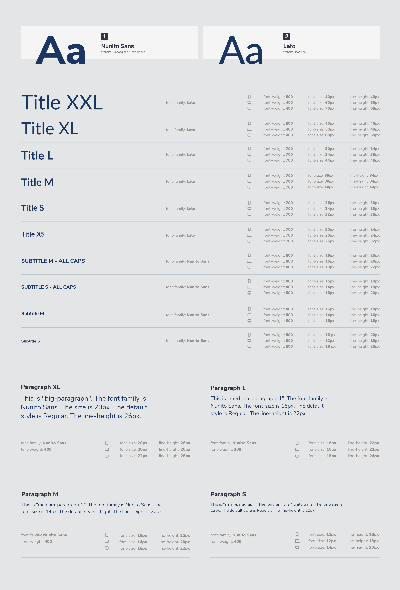

Feel free to hit me up, either for a chat about design, an opportunity or even a travel recommendation.
High End
Beauty
Online Store
Helping a beauty online store to communicate its brand value, increase its conversion rate and build meaningful relationships with its customers
Savage Beauties is a high end beauty online store. Their philosophy is based on the love for beauty and skin care. They sell products made from natural ingredients combined in revolutionary formulas that provide a unique experience and amazing results.
The customer base of the store shares the same passion for beauty and care. Savage Beauties has achieved a strong positioning of the brand on the Romanian market by offering a unique collection of high-end products.
To better reflect the brand positioning, I was tasked with designing the new Savage Beauties online store and creating the new design direction of the marketing banners.
The design of an online store starts from a well established set of UX guidelines. Though, some functionalities and design decisions will always differ based on the niche of the store and its target audience.
During the project, I collaborated with the marketing manager, the project manager and the developer. Based on the requirements defined during discovery, I created a friendly and reliable interface. The result provides an enjoyable and familiar experience.
Client
Year
Project Type
Scope
Made at
Savage Beauties
2020
Ecommerce Website
Wireframe, UI Design
Redouble Agency
Wireframing is an essential step in design. It helps me focus on finding the best functional solutions by eliminating distractions. Because functional changes are faster at this stage, it was important to validate the product before the visual design phase.
Aesthetics play a crucial role in the beauty industry. Creating a strong personal bond between the brand and the customer was one of the main goals of the visual design. To achieve that, I focused on designing a clean interface with a sense of elegance and style.
All high-end beauty products have premium packaging. My design strategy was to use this to our advantage by evoking the desired emotions through images while the interface remains in the background. On homepage, I created main and secondary banner sections, where products are presented in context, stimulating the imagination of the customers. Seeing that the store's Instagram profile was already full of contextual pictures, I saw another great opportunity to evoke emotions. So, I designed a section that promotes it.
On the catalogue page, my strategy was to make products the main focus. I achieved this by designing large product cards and placing images on the highest level of visual hierarchy.
The products are Savage Beauties' main competitive advantage. To address that, we separated the brand name from the product name. To give the interface a clean and minimalist feel, I used as few visual elements as possible. For structure, I mainly used whitespace. I used borders only to divide the main sections.
When they shop online, customers expect options to customize their experience. On smaller screens, displaying these options using modals helped to keep the user focused on the task at hand.
To shift the focus on the product, I made the photo gallery the largest element of the page, creating a lot of whitespace around it. For the same purpose, I gave it a fixed position while scrolling.
In the details section, I created two groups of content. The first group provides the details of the order and the actions. The second group provides a complete description of the product, divided into categories and organized as a toggle list (a design pattern frequently found on beauty online shops).
The shopping cart is the bridge between browsing and making a purchase. Helping the customer feel confident about his choices was not only important for him, but also for the business, whose goal was to decrease shopping cart abandonment. For a great user experience, I identified several design opportunities. Firstly, I designed a minimal version of the cart, easily accessible without leaving the current page. Secondly, I created a custom cart header, removing distractions and keeping the customer hooked. Last but not least, I designed a fixed sidebar for the summary.
The crucial role of the check-out process was carefully taken into account at every step of design.
One of my goals was to create a natural transition from the shopping cart to the checkout process. To achieve it, I created similar layouts for both sections. To limit the cognitive load, I divided the process into digestible steps. The final step provides a complete summary of the order and quick links to modify any detail. To show that store owners care about their customers, I designed a section with support options, always visible throughout the entire process.
A great check-out process should have a happy ending. The thank you page gives the customer confidence about his order. In addition to the confirmation message and the summary of the order, I looked for ways to improve the user experience even more. So I designed a call-to-action section for unregistered customers that informs about the benefits of creating an account. Furthermore, I added quick links to frequently asked questions related to orders.
Building meaningful relationships with its customers is crucial for any business.
The frequently-asked questions section helps with that, because it improves the perception of the brand. It creates trust by offering transparency and demonstrating expertise. The business gains even more benefits, such as reducing the need for support staff and improving search engine listings.
The list of questions could get lengthy, so I sought a solution that avoided overwhelming the user. For that, I used the interaction design pattern of Progressive Disclosure. The first page provides the customer with the main topics. After choosing a topic he can browse a searchable list of questions related to it. The top navigation eliminates the need to go back and forth between the topics list and the topic screen.
I always start my visual design process with a set of predefined design elements, such as typography styles and colors. At the end of the design process, I put together a style guide to ensure a smooth handoff and efficient collaboration with the dev team.


On the typography page, I documented the properties of the titles, subtitles and paragraphs, such as font-family, font-weight, font-size and line-height. Furthermore, I provided a guide for the font behavior at different breakpoints.
Get in touch /
Get in touch /
Get in touch /
The best way to get in touch is through my email adress. Check the contact page for a complete list of contact details.
View
My Contact
Details
Get in touch /
Get in touch /
Get in touch /
Feel free to hit me up, either for a chat about design, an opportunity or even a travel recommendation.
The best way to get in touch is through my email adress. Check the contact page for a complete list of contact details.
View
My Contact
Details